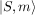
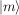
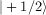
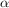
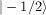
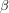

Spin vectors are usually represented in terms of their Hermitian cartesian component operators
Sometimes, the non-Hermitian ladder operators
are used. The cartesian operators are then given by
Some common commutators are
and
For a spin S the cartesian and ladder operators are square matrices of dimension 2S+1. They are always represented in the Zeeman basis with states  (m=-S,...,S), in short , that satisfy
For S=1/2
The  state is commonly denoted as , the  state as .
For S=1
For S=3/2
For S=2
For S=5/2